An adaptive profit, loss and discount tutor for self-help-group stall sellers · 18 Nov 2026
| Roll no. (ID) | 23B1534 |
|---|---|
| P – Problem | P4 – Adaptive tutor with automatic question generation |
| T – Topic | P4-T9 – Percentage: profit, loss, discount (Class 8) |
| L – Learner context | L3 – Adult learner (25–45) in a self-help group, low print literacy, comfortable with WhatsApp voice notes |
| C – Design constraint | C5 – Teacher-in-the-loop: a teacher view that shows learner progress and lets the teacher approve or override AI feedback |
| Live app | https://et617-23b1534.vercel.app |
| Repository | https://github.com/RAGHURAMGUNDI/et617-endsem-23b1534 |
Members of a women's self-help group (SHG) sell papad and pickles at a weekly market. They know whether money came in, but cannot say how good a deal was: they work out profit % on the selling price, confuse a ₹ profit with a % profit, and accept "20% discount" offers from wholesalers without checking the final price. Wrong percentages lead to wrong pricing, so the group can sell at a loss without noticing. Members have low print literacy, so textbook word problems do not reach them, and the SHG facilitator ("Didi") has no time to check every member's practice. Munafa Tutor gives each member short, adaptive practice built from her own stall situations, and gives Didi a dashboard to check and correct the tutor.
Learning outcomes. After 2–3 sessions the learner will be able to:
Context of use: on the SHG's shared Android phone (Chrome) after the weekly meeting, 10–15 minutes per member; the facilitator reviews the dashboard on the same phone afterwards.
| Name, age | Kamla Devi, 38, member of "Ujala Mahila Bachat Gat", Pune; runs the group's papad stall at the Sunday market |
|---|---|
| Literacy | Studied to Class 3; reads numbers and short words; prefers listening (WhatsApp voice notes) |
| Prior knowledge | Quick mental addition and subtraction of rupees; halves and quarters; knows "10% = one-tenth" from bank interest talk; has never used a formula. Prerequisite "% of an amount" is partly known. |
| Misconception M1 | "Profit % is worked out on the selling price." Bought ₹400, sold ₹500: profit % = 100 ÷ 500 = 20% (correct: 25%). |
| Misconception M2 | "₹ profit is the same as % profit." "We earned ₹20, so it is 20% profit"; "₹15 off is the same as 15% off". |
| Device | The SHG's shared Android phone, Chrome, mobile data |
| Time | 10–15 minutes after the weekly meeting |
| Language | Simple spoken English and Marathi; the app uses short English sentences, ₹ numbers and emoji; explanations can be dictated by voice, like a WhatsApp voice note |
| Own numbers | Before practice she can type what she spent and earned on her last market day; some generated questions then use her own stall numbers, and the summary shows her real profit %. |
| Motivation | Wants the stall to earn more and not be cheated by wholesalers; proud when she can explain things to the group |
| STAR phase | In the app |
|---|---|
| 1 The Challenge | "We bought papad for ₹400 and sold it all for ₹500. Meena says 20% profit. Lata says 25%. Who is right?" |
| 2 Generate ideas | The learner picks Meena, Lata or "not sure". This is a diagnostic: picking Meena logs M1 and lowers the profit % mastery estimate. |
| 3 Multiple perspectives | Both women's working is shown. "Both found the profit (₹100) correctly. The difference is what they compared it with… So Lata is right: 25%." |
| 4 Research & revise | The "₹100 secret": ₹400 = 4 notes of ₹100; profit ₹100 shared over 4 notes = ₹25 for each ₹100 = 25%. Rules: Profit % = profit ÷ cost price × 100; Loss % likewise; Final price = marked price − (d% of marked price). |
| 5 Test your mettle | The adaptive tutor (below) |
| 6 Go public | A "stall maths card" with mastery bars to show and explain at the next group meeting |
Percent means "for every ₹100". Profit % asks: how much profit for every ₹100 you spent? So the base is always the cost price. A discount of d% takes away d rupees for every ₹100 of the marked price.
Skills: K1 percent of an amount (prerequisite), K2 profit/loss %, K3 discount and final price. Each has 3 difficulty levels: L1 round numbers, profit only; L2 non-round, profit or loss; L3 multi-step (K2: 40 packets at ₹25, sold at ₹30 each; K3: compare "₹50 off" vs "15% off"). Formats: multiple choice (with misconception distractors), numeric entry, spot-the-mistake, explain in your words (typed or dictated).
| # | Example generated task (format) | Model answer | Feedback: correct | Feedback: M1 | Feedback: M2 |
|---|---|---|---|---|---|
| 1 | "The group bought papad for ₹200 and sold it for ₹220. What is the profit %?" (MCQ: 10% · 9.1% · 20% · 15%) | 10% | "Correct! Profit = ₹20. profit % = 20 ÷ 200 (cost price) × 100 = 10%" | 9.1% → "It looks like you compared with the selling price…" + ₹100-notes explanation | 20% → "It looks like you mixed up rupees and percent." + "Rupees vs percent" explanation |
| 2 | "Some papad got damp. Bought for ₹300, but sold for only ₹240. What is the loss %?" (numeric) | 20% | "Correct! Loss = ₹60. loss % = 60 ÷ 300 × 100 = 20%" | 25 (60 ÷ 240) → M1 feedback | 60 → M2 feedback |
| 3 | "Bought ₹400, sold ₹500. Shabana worked out the profit %. Tap the step with the mistake." Step 1: profit = ₹100 · Step 2: 100 ÷ 500 × 100 = 20% · Step 3: so 20% (spot the mistake) | Step 2 | "Step 2 divides by the selling price ₹500. It must divide by the cost price ₹400: 25%." | Step 3 → general feedback and the same explanation | Step 1 → M2 ("the amount is right; the base is wrong") |
| 4 | "Lata asks: 'We bought for ₹200 and sold for ₹220. How do I find the profit %?' Explain the steps." (explain) | "Profit = 220 − 200 = ₹20. Divide by the cost price 200 and multiply by 100 = 10%." | Rubric 3/3: "✔ You found the profit amount. ✔ You used the cost price as the base. ✔ You turned it into 'out of 100'." | "✖ You divided by the selling price. Divide by the cost price (₹200), the money you started with." | "✖ Then divide and multiply by 100 to get the %." (amount stated as %) |
| 5 | "A papad box is marked ₹360. The shop gives 25% discount. What is the final price?" (numeric) | ₹270 | "Discount = 25% of 360 = ₹90. Final price = 360 − 90 = ₹270" | — | ₹335 (360 − 25) → "₹ and % are different things: '10% off' takes away 10 rupees for every ₹100…" |
| 6 | "A wholesaler sells a ₹500 sack of urad dal. Offer A: ₹60 off. Offer B: 15% off. Which gives the LOWER price?" (MCQ, level 3) | B (₹425 vs ₹440) | "A: 500 − 60 = ₹440. B: 15% of 500 = ₹75, so ₹425. Offer B is lower." | — | A → M2 alternative explanation |
URL: https://et617-23b1534.vercel.app · Plain HTML, CSS and JavaScript (engine.js = tutor logic, app.js = screens, style.css = glass interface); no template or UI library. Data is stored per member on the shared phone (localStorage). Roll no. 23B1534 is in the footer of every screen and on the About screen.
Screen map (12 screens and states): 1 Login (new member: picture + name + own 4-digit PIN; returning member: tap name → PIN keypad; Didi: PIN keypad) → Profile hub (stats, skill bars, next focus; buttons 📘 Take lesson · 🎯 Practise · 📊 My report · 💬 Didi's notes) → Take lesson: → 2 Challenge + Your idea → 3 Two ways of thinking → 4 Lesson → 5 Question (4 formats, hint, "My progress") → 6 Feedback + "🧭 Why this next?" with one of: correct / harder · alternative explanation · prerequisite lesson → back to 5 (K1 practice banner during the prerequisite) → 7 Summary card (Go public) → back to the Profile. My report: mastery-over-time chart, results by skill and by question type, hints and time, mistakes to watch, last answers. Practice can be paused at any time ("Stop and go to my profile"). Side branches: 8 Facilitator PIN → Dashboard (mastery heatmap, misconception counts, review queue, decision log) · 9 "Didi checked your answers" (shown to the learner on her next login) · About.
C5 teacher-in-the-loop, visibly implemented: every explanation the tutor scores goes into Didi's review queue with the tutor's rubric score and feedback. Didi presses Approve or writes her own feedback and presses Override (optionally marking the answer as correct, which also corrects the learner's BKT mastery). The learner sees "⏳ Didi will also check this answer", and on her next login "💬 Didi checked your answers".
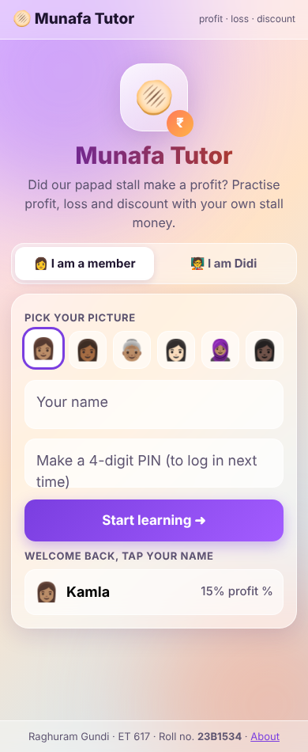
1 Login: member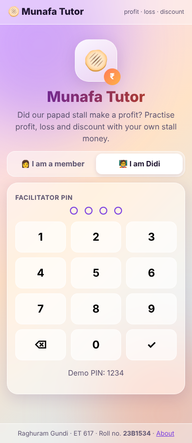
1 Login: Didi PIN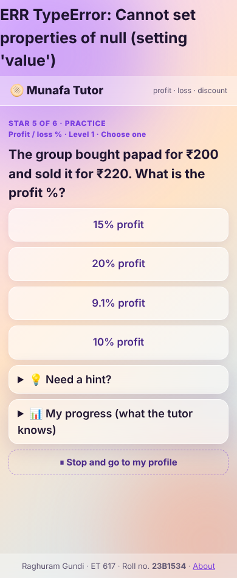
Profile hub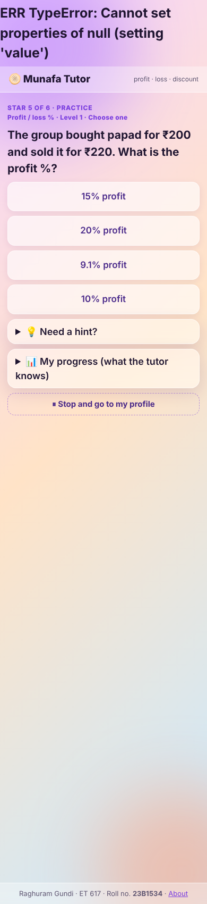
My report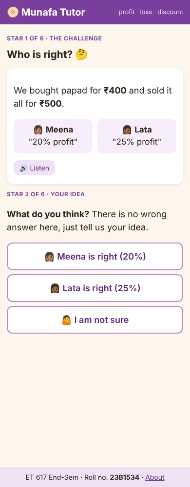
2 STAR: Challenge + idea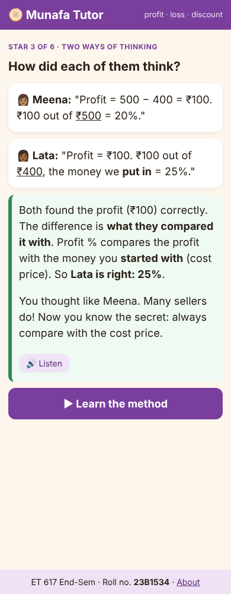
3 Two ways of thinking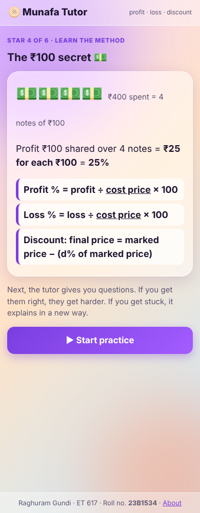
4 Lesson (₹100 secret)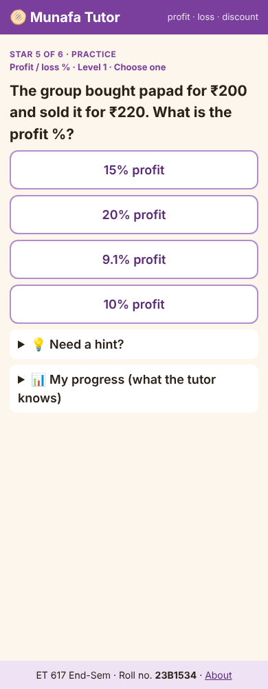
5 Generated question (MCQ)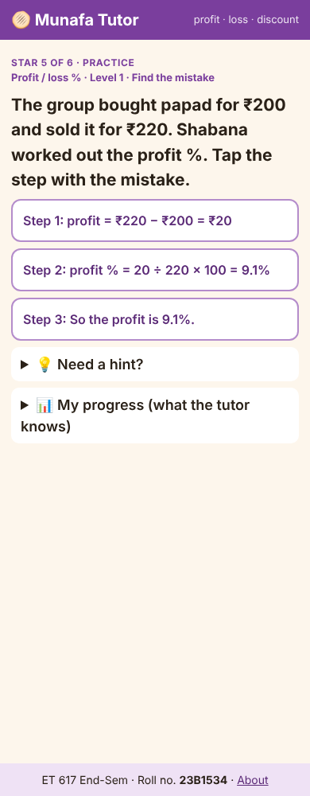
5 Spot-the-mistake format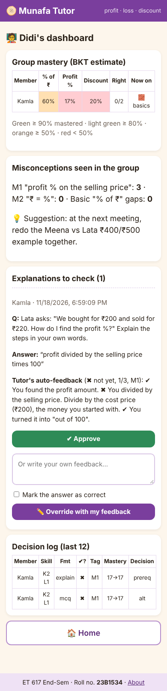
8 Facilitator dashboard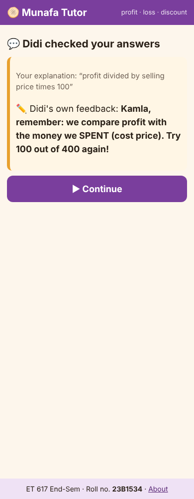
9 Learner sees Didi's override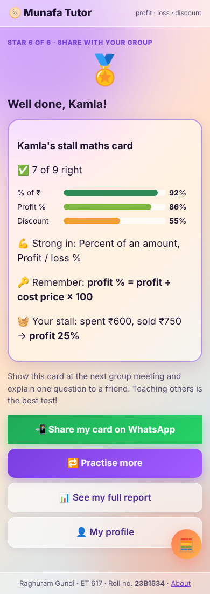
7 Go public card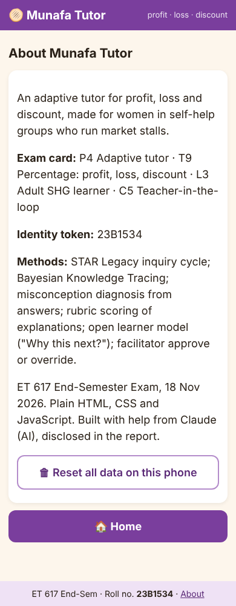
About: Raghuram Gundi · ET 617 · 23B1534She picks Lata (25%), so the challenge raises her K2 estimate. She answers the first generated question correctly → "Correct!" with the worked solution; "Why this next? Correct, but mastery < 80% → one more at the same level". She answers the second correctly → mastery ≥ 80% → ⬆️ harder question (level 2: a loss problem with non-round numbers).
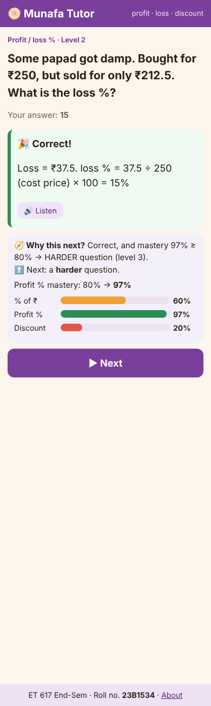
(a) correct → HARDER questionShe picks Meena (20%), which logs M1. On "bought ₹200, sold ₹220", she chooses 9.1% (20 ÷ 220). The tutor diagnoses M1: "It looks like you compared with the selling price" and gives an 🔄 alternative explanation ("Look at it as ₹100 notes: you started with ₹200 = 2 notes… profit for each ₹100 you put in is ₹10"), then a similar question. She makes the same error again (2 wrong in a row) → 🧱 prerequisite instruction on "% of an amount", then K1 practice ("What is 50% of ₹400?"). After a correct K1 answer she returns to profit %. When she explains "profit divided by the selling price times 100", the rubric scores 1/3 and flags M1. Didi sees it on the dashboard and overrides it with her own words.
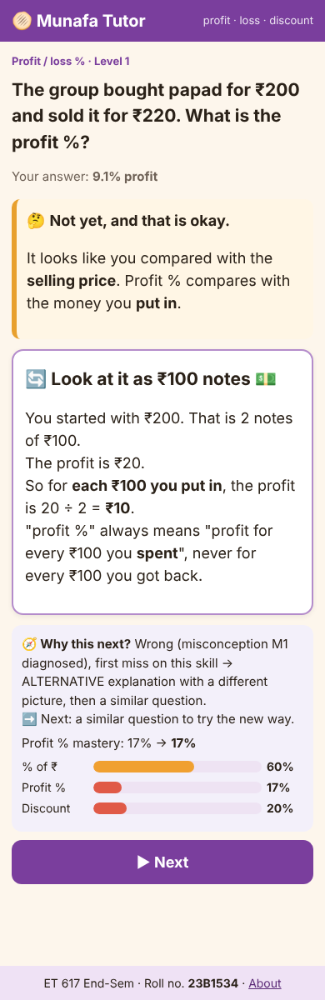
(b) M1 → ALTERNATIVE explanation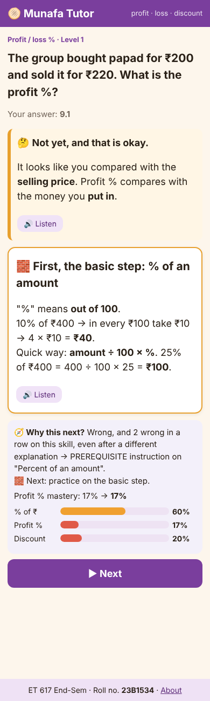
(b) 2nd miss → PREREQUISITE lesson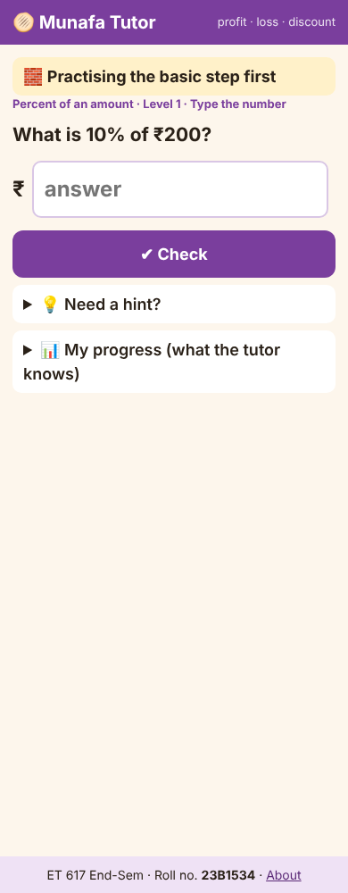
(b) prerequisite practice (K1)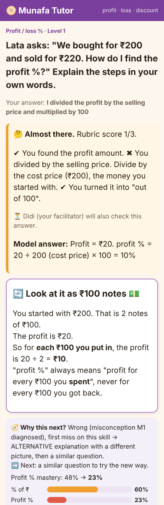
(b) explanation scored, M1 flagged| AI feature | What it does | Input → actual call | Output | Checked before the learner sees it | Fallback |
|---|---|---|---|---|---|
| 1 Learner model (Bayesian Knowledge Tracing) | Estimates P(mastery) for K1–K3 after every answer | Previous P(L), correct or not, format → bktUpdate(pL, correct, format) with P(slip) = 0.1, P(transit) = 0.15, P(guess) = 0.25 MCQ / 0.33 spot / 0.15 numeric / 0.15 explain | New P(L), shown as bars ("Profit % mastery: 17% → 43%") | Clamped to 0.99; shown transparently in "Why this next?" and on the dashboard | The facilitator override re-runs the update with her judgement |
| 2 Automatic question generation | Builds a new question for the chosen skill, level and format | makeQuestion(skill, level, format); numbers come from level banks so answers stay whole (e.g. CP ∈ {200, 400, 500}, p ∈ {10, 20, 25, 50} at L1) | Text, options, steps, model answer, plus the misconception values (M1 = amt ÷ SP × 100, M2 = amt) | Answers are computed, not generated, so they are always correct; distractors are deduplicated | Deterministic templates, so there is no network dependency |
| 3 Misconception diagnosis | Maps a wrong answer to M1, M2 or P (prerequisite) | q.diag(answer) compares with the M1/M2/P values within a tolerance | Tag that drives the feedback and the decision | Only exact pattern matches are tagged; otherwise "no clear pattern" → generic picture explanation | Untagged errors still get an alternative explanation |
| 4 Explanation evaluator (NLP rubric) | Scores free-text or dictated explanations | scoreExplanation(text, q): C1 cost-price base (/cost|cp|bought|spent|paid…/ or the CP number), C2 finds the difference, C3 divides and ×100; flags a selling-price base as M1 | Score 0–3, correct or not, feedback per criterion | Teacher-in-the-loop: every evaluation is queued for Didi to approve or override before it is final | The model answer is always shown; Didi's override replaces the auto feedback |
| 5 Speech-to-text (browser) | Dictation for explanations | webkitSpeechRecognition (lang en-IN) | Text in the answer box | The learner sees and can edit the dictated text before sending | "Voice not available here, please type" |
Planned LLM extension (not live): the rubric evaluator could be replaced by an LLM call: system prompt "You are checking an SHG member's explanation of profit %. Score C1 (cost price base), C2 (difference), C3 (÷ and ×100), flag M1 if divided by SP. Reply as JSON {c1,c2,c3,m1,feedback ≤ 25 words, simple English}." Its output would be validated (JSON schema, feedback length, no answer for a different question) and would still go to the facilitator queue. I kept the rule-based evaluator live because it is transparent, works offline on the shared phone and needs no API key, and because the facilitator check covers its limits.
How the design supports learning. The STAR Legacy cycle starts from a real dispute between two group members, so Kamla commits to an idea before instruction (generating first, then learning, as in "preparation for future learning"). Seeing both methods side by side targets M1 directly. Practice then uses mastery learning: a skill is mastered only at P(L) ≥ 90% at level 3. Feedback is immediate and elaborated (worked solution), and the "Why this next?" panel is an open learner model, so the learner (and Didi) can see why the tutor chose the next task, which builds trust and self-monitoring.
Scaffolding. Hints on demand (logged); alternative representations (₹100 notes, "rupees vs percent"); spot-the-mistake tasks (learning from worked errors); a prerequisite detour when the foundation is weak; and explanation prompts (self-explanation) that the facilitator reviews.
Answer to the P4 design challenge: the decision rule. After each answer the tutor updates BKT mastery P(L) and applies:
if correct:
if a hint was used or the answer took > 120 s → same level (and a hinted answer counts as weaker evidence in BKT)
elif P(L) ≥ 0.90 and level = 3 → skill mastered, next skill
elif P(L) ≥ 0.80 → HARDER question (level + 1)
else → same level again (consolidate)
if wrong:
if tag = P (a "% of amount" error), or P(K1) < 0.50,
or 2nd wrong in a row on this skill → PREREQUISITE instruction on K1
(until P(K1) ≥ 0.70, then return)
else (M1/M2 diagnosed or unclear) → ALTERNATIVE explanation (a new representation)
+ a similar question
All three outcomes are shown in D5: harder (a), alternative explanation and prerequisite (b). The reasoning is that one mistake with a known misconception is a conceptual issue that a different representation can fix; a repeated mistake after a new representation, or an error in the basic step, means the foundation is missing, so the tutor teaches the prerequisite instead of repeating the same explanation.
How C5 and L3 shaped the design. Automatic scoring of free-text from a low-literacy adult is the least reliable part of the system, so that is exactly where the facilitator is placed: every explanation is reviewed, and Didi's override also corrects the learner model. The dashboard turns individual logs into group action ("M1 seen 3 times → redo the Meena vs Lata example at the meeting"). For L3: stall contexts (papad, pickles, urad dal wholesaler), ₹ amounts rather than abstract numbers, short sentences, voice dictation for explanations (no synthetic voice: I removed it because a robotic voice felt patronising and distracting in a group setting), encouraging tone ("Not yet, and that is okay"), and a shared-phone member list instead of logins.
| Outcome | Assessment items / rubric | Log data collected (already logged in the app) | Success criterion |
|---|---|---|---|
| 1 Calculate profit/loss % | Post-test of 4 new numeric items (2 profit, 2 loss, non-round); a delayed test after 2 weeks | Per answer: skill, level, format, given answer, correct, misconception tag, mastery before → after, decision | ≥ 75% of members get 3 of 4 right; M1 answers fall from the pre-test (Meena choice) to < 15% |
| 2 Compute and compare discounts | 2 final-price items + 1 offer comparison ("₹50 off" vs "12% off on ₹600") | K3 attempts, M2 tags, level reached | ≥ 70% correct on the comparison; K3 mastery ≥ 0.8 for most members |
| 3 Explain and spot errors | Explanation rubric (C1 base, C2 difference, C3 ÷ and ×100; 0–3), double-scored by Didi; 2 spot-the-mistake items | Rubric scores, Didi approve/override decisions, hint use | Average rubric ≥ 2.5/3; agreement between tutor and Didi ≥ 80% (if lower, refine the rubric) |
Data export: the dashboard downloads every answer as CSV (member, time, skill, level, format, answer, correct, misconception, seconds, hint, own numbers, mastery before/after, decision) for this analysis.
System-level checks: the proportion of prerequisite detours that lead back to the main skill within 3 items (target ≥ 80%); the BKT prediction accuracy of the next answer (target AUC ≥ 0.7, to tune the parameters); real-world transfer: does the group price its next batch with the correct cost-price base (facilitator observation)?
AI tools used (in order): Claude (Anthropic), a single chat: preparing the environment in the morning, then during the exam choosing the card, writing DESIGN.md, all code, GitHub commits, Vercel deployment, screenshots and the first draft of this report. Chat link: [paste the share link of this Claude chat here]
Reflection: Claude produced the code and the report draft; my role was choosing the learner context, checking that the persona, the misconceptions and the feedback fit an SHG stall seller, and testing both paths on the live app. My key AI-use judgement was to keep the parts that must be correct (answers, diagnosis, decision rule) deterministic and transparent, and to put the facilitator in the loop exactly where automatic judgement is weakest, which is scoring the explanations. A limit is that the rubric's keyword matching can miss correct explanations in unusual words, and the teacher override exists for that.